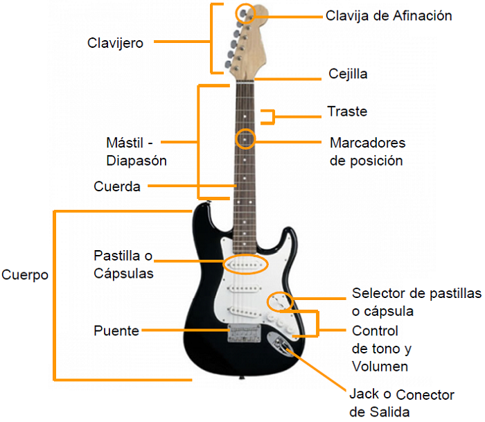

Durante la década de 1940, algunos músicos e ingenieros se dispusieron a diseñar y fabricar
una guitarra eléctrica compacta. Al hacerlo, intentaban solucionar un problema que se producía
al incorporar pastillas a las guitarras acústicas: si el volumen del amplificador era demasiado alto,
el sonido del altavoz hacía vibrar el cuerpo de la guitarra produciéndose una molesta distorsión
del sonido conocida como "feedback" o realimentación. La solución lógica era aumentar la masa
del instrumento, para reducir su capacidad de vibración; de aquí que aparecieran las guitarras
eléctricas compactas (o de cuerpo sólido). No hay acuerdo respecto a quién fue el que creó la
primera de ellas. A principios de los años cuarenta el guitarrista de country-jazz Les Paul creó su
propia guitarra "Log" (tronco), usando un mástil Gibson adherido a un bloque de madera de pino,
sobre el cual se montaron las pastillas y el puente. Cuando trató de vender la idea a Gibson, éste
no demostró ningún interés. Por su parte, Paul Bigsby, ayudado en el diseño por el guitarrista de
country Merle Travis, creó una guitarra compacta con un aspecto bastante similar al de las
guitarras eléctricas actuales. («The History of The Electric Guitar: How Music Was Changed
Forever - free article courtesy of ArticleCity.com», s. f.)
Cuerpo
Normalmente esta hecho de madera. Habitualmente caoba, fresno o aliso. En su interior se
alojan todos los componentes electrónicos y puede ser sólido, semisólido o totalmente hueco. Es
la parte estética de la guitarra.
Mastil
El mástil esta hecho de madera habitualmente arce, pudiendo ser también de caoba u otro
tipo de maderas. Suele ir cubierto por una capa da de madera (diapasón) que puede ser de ébano,
palorrosa u otras maderas duras. En el interior del mástil se introduce una varilla de acero u otro
material muy resistente llamada alma. Este elemento tiene como objetivo contrarrestar la tensión
de las cuerdas así como posibles curvaturas del mástil debidas a los cambios climáticos.
Diseño y fabricación de guitarra eléctrica modular
Pala
Es el extremo del mástil, también llamado clavijero debido a que es la zona en la que se
encuentran las clavijas.
Diapason
El diapasón es la superficie de ejecución de la guitarra. En él van colocados los trastes.
Puede ser de dos tipo, una tapa de madera dura como ébano, palorrosa o similares o puede formar
parte del mástil.
Clavijas
Son mecanismos situados en la pala que accionados por un tornillo sin fin regulan la tensión
de las cuerdas. Sirven para realizar la afinación de las cuerdas.
Cajuela
Es una de las dos partes donde se apoyan las cuerdas de una guitarra. Está situado al
principio del mástil y suele ser de hueso, marfil, plástico, acero, etc.
Trastes
Los trastes son finas tiras de metal habitualmente níquel que están incrustadas en el
diapasón. Es una de las partes que más influye en cómo se siente el instrumento al tocarlo.
Alma
El alma es habitualmente una barra de metal que atraviesa el mástil longitudinalmente por
su interior. Su finalidad es contrarrestar la tensión ejercida por las cuerdas.
Marcadores De Posicion
Son marcas en el diapasón que nos facilitan saber en qué traste estamos tocando. Estas
marcas suelen ir en los trastes 3, 5, 7, 9, 12, 15, 17, 19 y 21.
Pastillas
Son la parte más importante de la guitarra. Este es el componente que transforma la
vibración de las cuerdas en señales eléctricas. Están formadas por un imán permanente rodeadas
por un bobinado de alambre de cobre. Cuando un cuerpo metálico ferromagnético se mueve
dentro del campo magnético del imán permanente se provoca una corriente inducida en el
bobinado proporcional a la amplitud de movimiento y de frecuencia igual a la de la oscilación del
cuerpo. Las pastillas electromagnéticas se encuentran en diversas formas, siendo las más
habituales dos: single coil con un solo núcleo magnético y humbucker con dos núcleos magnéticos
y doble bobinado para eliminar ruidos
Controles
Dentro de los controles tenemos los potenciómetros de volumen y tono, el selector de
pastillas y el Jack de salida. Los potenciómetros se encargar de variar el volumen y el tono, el
selector de pastillas de seleccionar que pasillas activar y el Jack de salida es donde conectamos
mediante un cable la guitarra y el amplificador
Puente
El puente es el otro lugar en el que se apoyan las cuerdas, concretamente en las selletas.
Pueden ser de dos tipos, fijos o móviles. Dentro de estos dos grupos existen varios diseños pero
no nos vamos a meter en profundidad en este apartado. Tan solo vamos a definir un tipo de puente
móvil que es el que se va a utilizar en esta guitarra
Golpeadores
El golpeador protege la madera de nuestras manos o púas y tapa la parte del cuerpo donde
van alojados los controles.
 |